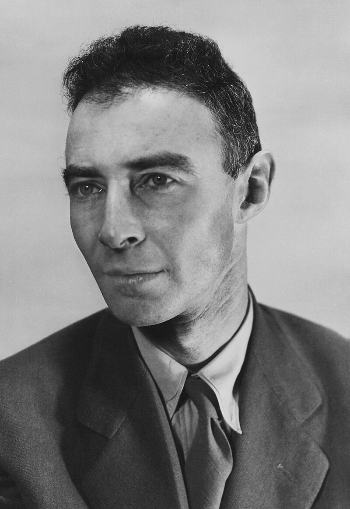
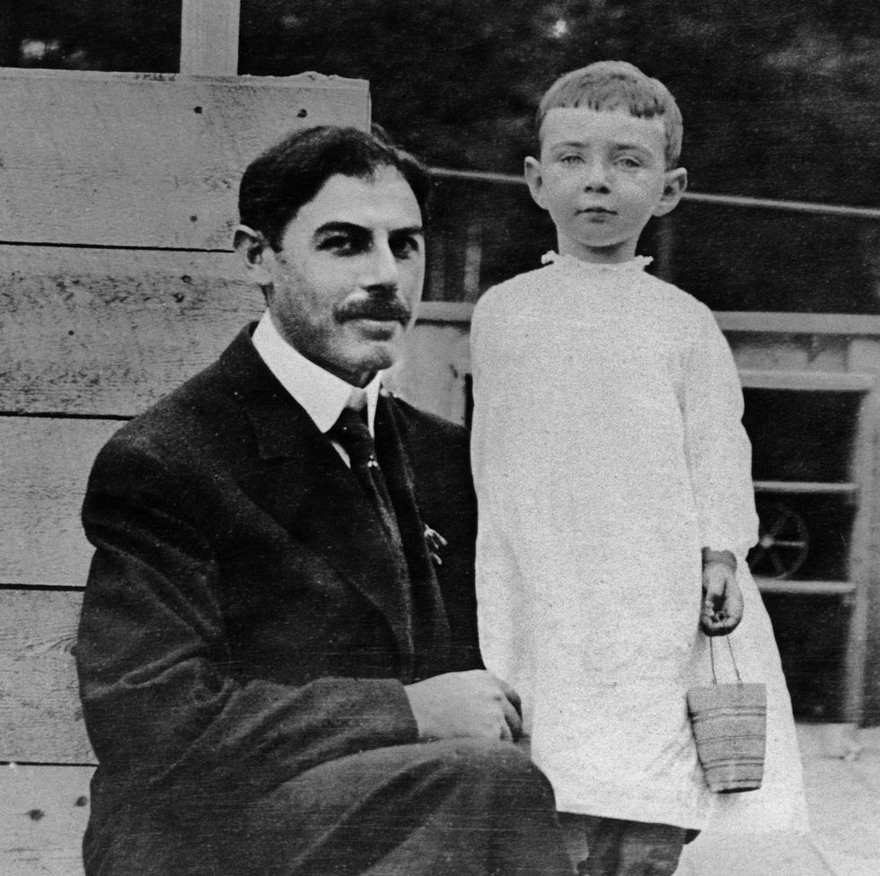
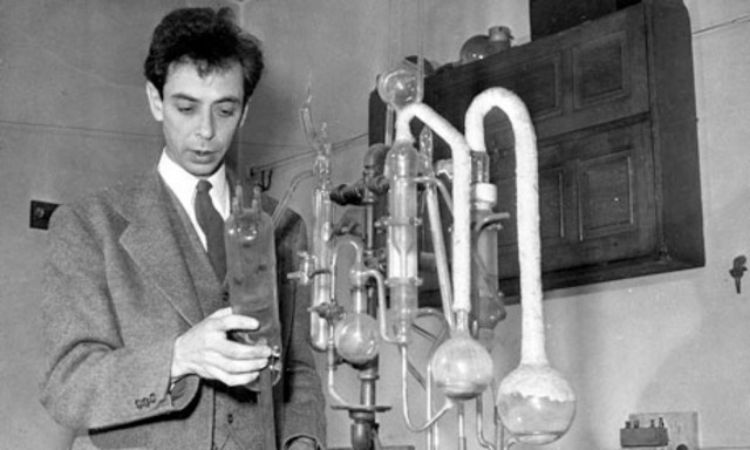
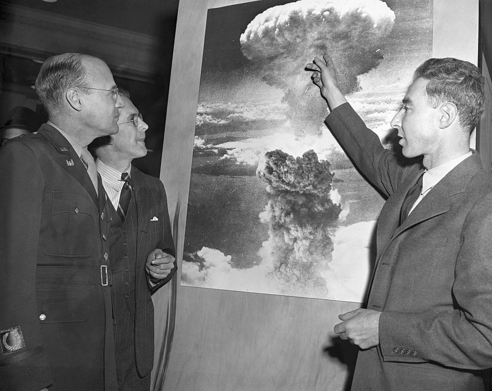
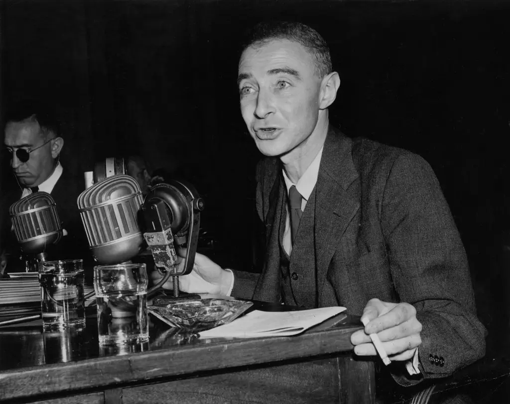
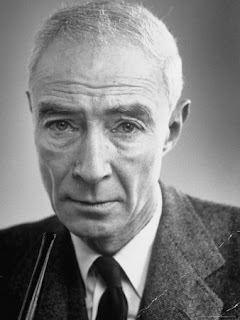

| Personal Info | |
|---|---|
Name: Julius Robert Oppenheimer Born: 22 April 1904 Died: 18 February 1967 (aged 62) Ethnicity: Jewish Nationality: United States of America |
 |
| Personal Life |  |
|---|---|
|
Oppenheimer was born Julius Robert Oppenheimer into a non-observant Jewish family in New York City on April 22, 1904, to Ella (née Friedman), a painter, and Julius Seligmann Oppenheimer, a successful textile importer. Robert had a younger brother, Frank, who also became a physicist...... |
|
| Julius Oppenheimer with his young son, J. Robert Oppenheimer |
|  | Early Career |
|---|---|
| Oppenheimer was awarded a United States National Research Council fellowship to the California Institute of Technology (Caltech) in September 1927. Bridgman also wanted him at Harvard, so a compromise was reached whereby he split his fellowship for the 1927–28 academic year between Harvard in 1927 and Caltech in 1928. At Caltech, he struck up a close friendship with Linus Pauling...... | |
| Robert Oppenheimer, 1922 |
| Manhattan Project |  |
|---|---|
| The Manhattan Project was a research and development project that produced the first atomic bombs during World War II. It was led by the United States with the support of the United Kingdom and Canada. From 1942 to 1946, the project was under the direction of Major General Leslie Groves of the US Army Corps of Engineers. The Army component of the project was designated the Manhattan District; "Manhattan" gradually became the codename for the entire project...... | |
| Robert Oppenheimer discussing atomic bomb in February 1946 |
|  | Postwar Activities |
|---|---|
| Once the public learned of the Manhattan Project after the bombings of Hiroshima and Nagasaki, Oppenheimer—suddenly a household name as the "father of the atomic bomb"—became a national spokesman for science, emblematic of a new type of technocratic power; he appeared on the covers of Life and Time. Nuclear physics became a powerful force as nations realized the strategic and political power that atomic weapons conferred...... | |
| Robert Oppenheimer at meeting of the Joint Atomic Energy Committee, in June 1949 |
| Legacy |  |
|---|---|
| When Oppenheimer was stripped of his political influence in 1954, he symbolized for many the folly of scientists who believed they could control the use of their research, and the dilemmas of moral responsibility presented by science in the nuclear age. The hearings were motivated by politics and personal enmities, and reflected a stark divide in the nuclear weapons community. One group passionately feared the Soviet Union as a mortal enemy...... | |
| Old Robert Oppenheimer |